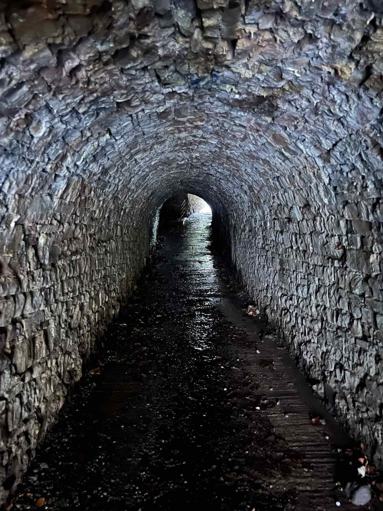
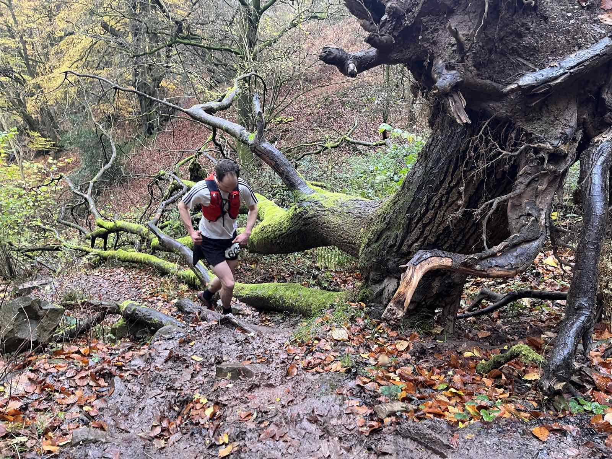
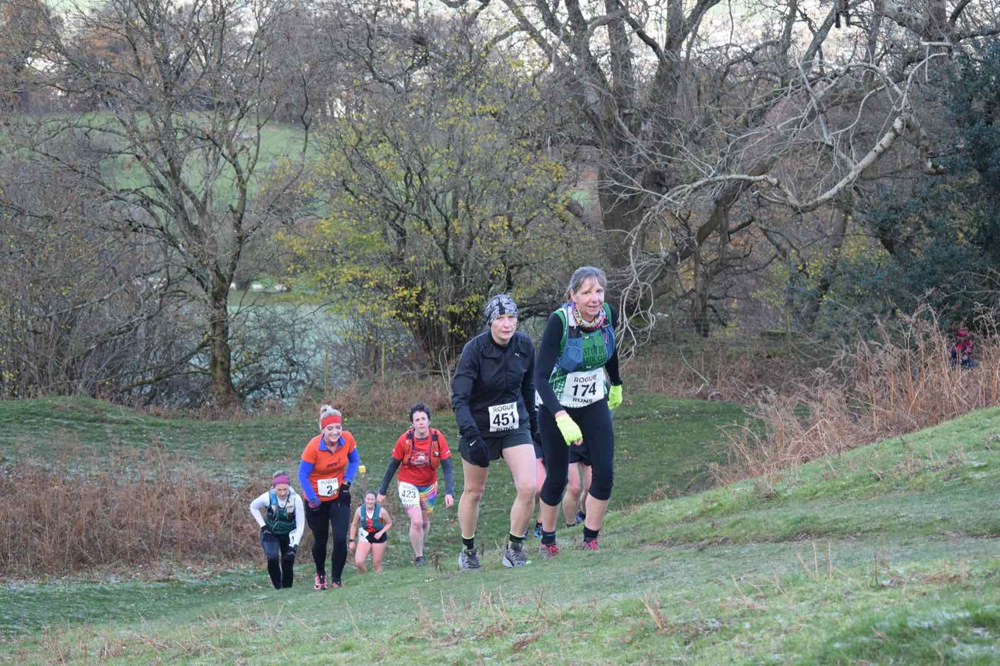
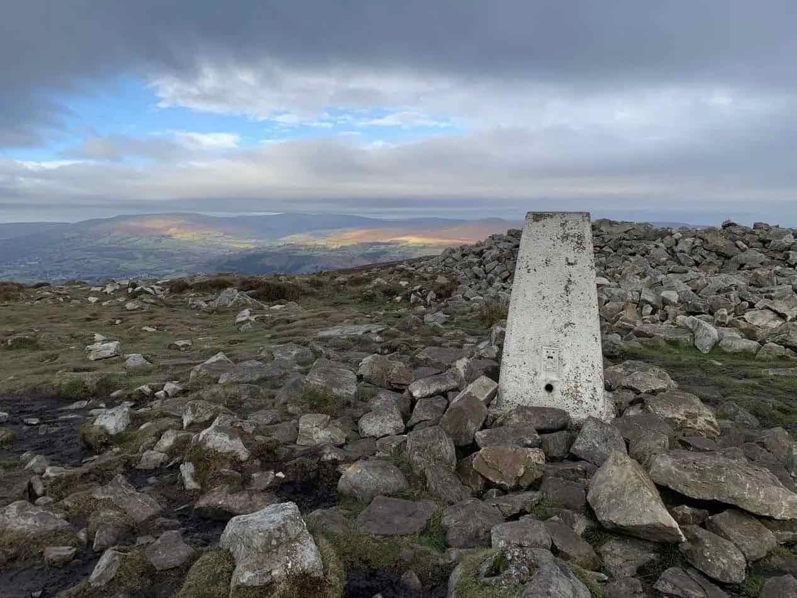

5.7 km · 485 m ascent
Route
Llwybr
The 2026 race starts at the bottom of Church Lane, Llanfoist.
This is the confirmed 2026 route. The official race figures are 5.7 km with 485 m ascent. The downloadable GPX contains the route geometry but no elevation data, so it must not be used to infer a different distance, ascent or elevation profile.
Interactive route
Explore the course
The route starts and finishes at the bottom of Church Lane, Llanfoist, climbs to the Blorenge trig point and returns by the established course. Pan or zoom the map for visual orientation.
Loading the interactive route map…

Route guide
From village to summit and back
-
The start
Y cychwyn -
The tunnel
Y twnnel
-
The tram road
Y ffordd drams
-
The steep bit
Y rhan serth
-
The trig, and now back down
Y trig, ac yn awr yn ôl i lawr
-
The finish
Y gorffen
2026 route documents
The GPX is provided for route familiarisation and contains no elevation profile. It does not replace a waterproofed route map, compass, mountain judgement, the Race Organiser’s instructions or the WFRA navigation and safety guidance.